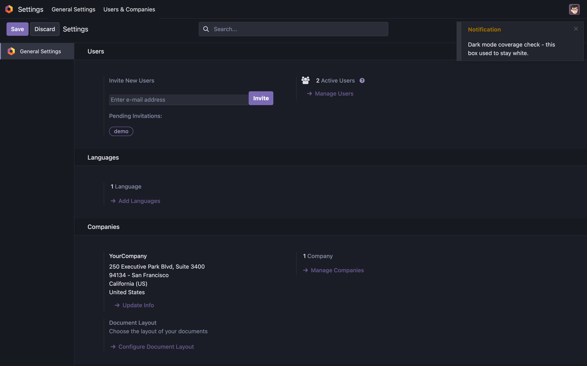
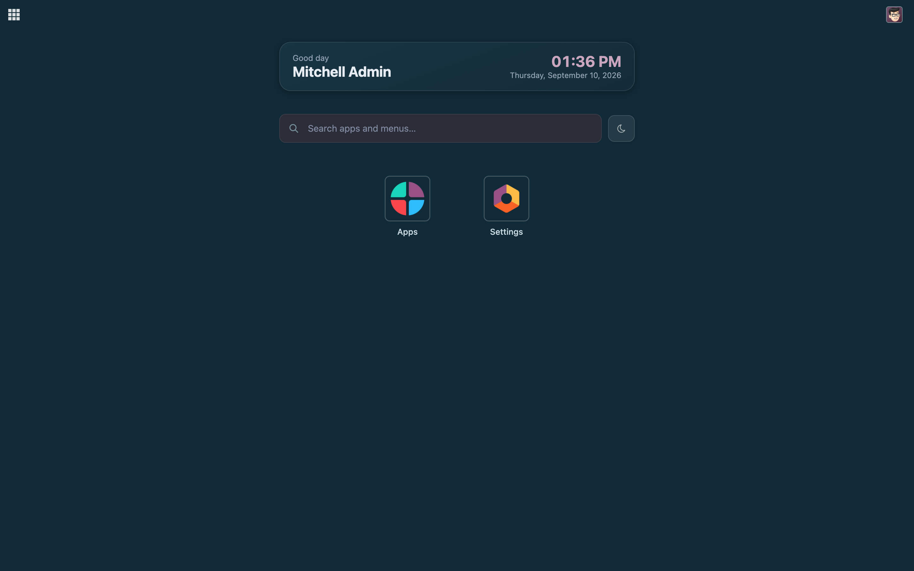

Light, Dark, or follow your system — across the whole backend
A dark theme for Odoo that keeps going once you leave the screens it was written against. Three states rather than two — Light, Dark, and System, which follows the operating system and changes with it. The choice lives in your browser, so nothing is written to your database and each person picks their own.

Notifications, dialogs, popovers and tooltips are the first things to give a dark theme away. They render in a layer of their own, and most themes never reach it.
The overlay layer, tooOdoo puts every notification, dialog, popover and tooltip in a container outside the main view. Style only what you can see and those stay white. This theme styles that container. |
Modules it has never metAlongside Odoo's own screens it styles the structural pieces every module is built from — cards, tables, forms, dropdowns, tabs — so an app written after this theme still lands on sensible colours. |
Native widgets follow
|
It survives a reload
While booting, Odoo rewrites the |
And a background tabBrowsers throttle background tabs, so the event announcing "the system just went dark" can go undelivered. Leave Odoo open through the afternoon and it would still be light at night. The theme is re-checked when the tab comes back. |
Per person, not per databaseThe preference is kept in the browser. No new model, no column, nothing to migrate — and one person choosing dark does not decide it for everyone else. |

With Modern Home Grid installed, a theme button appears beside its search box. Neither module depends on the other — the home grid simply asks whether a theme service is present, and leaves the button out when it is not.
Built on Odoo Community modules only, so it runs on both editions. Available for
Odoo 17.0, 18.0 and 19.0. It depends on web and nothing else, adds no
model and no menu, and can be uninstalled at any time — the interface simply
returns to the standard Odoo theme.